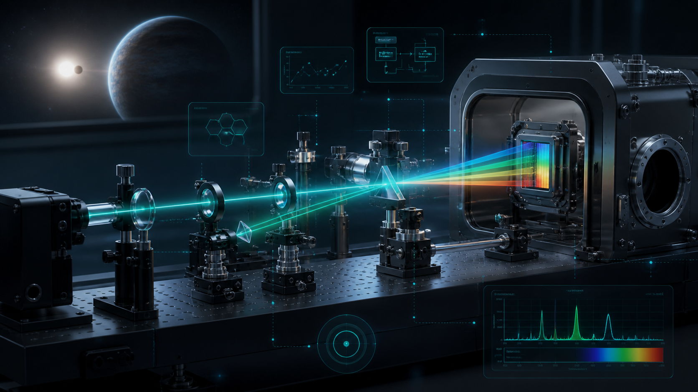
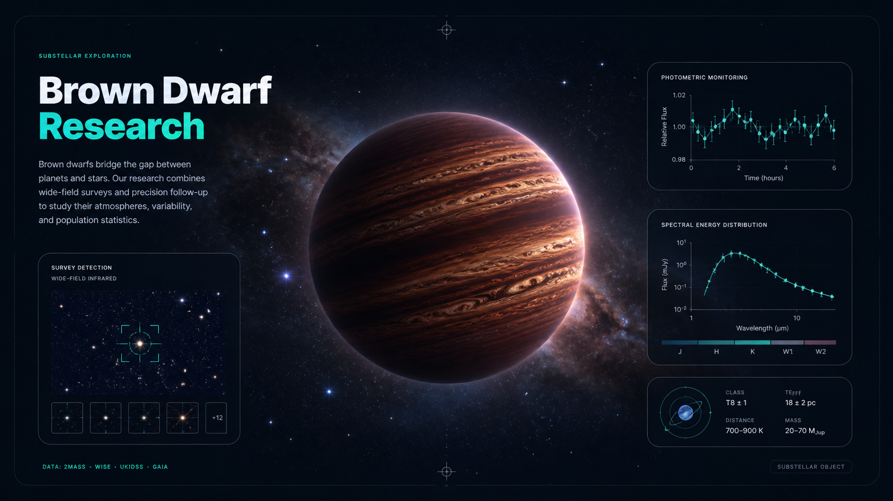
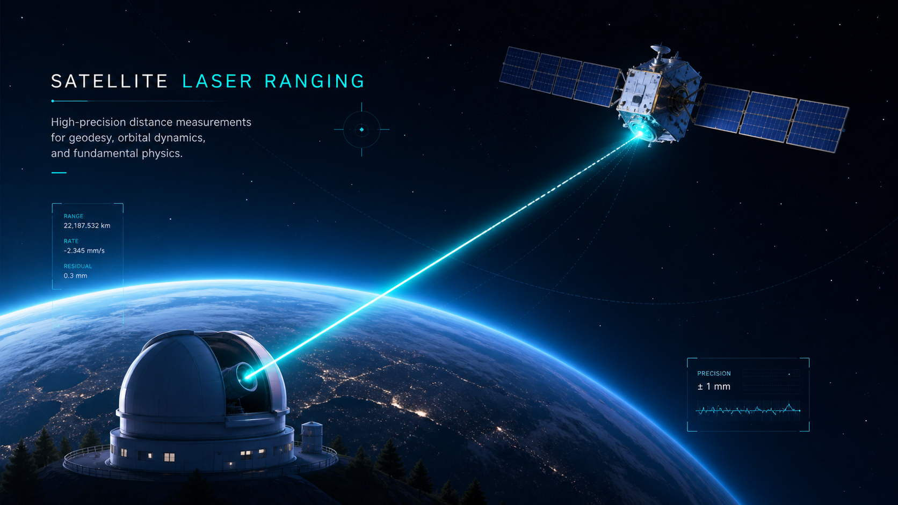
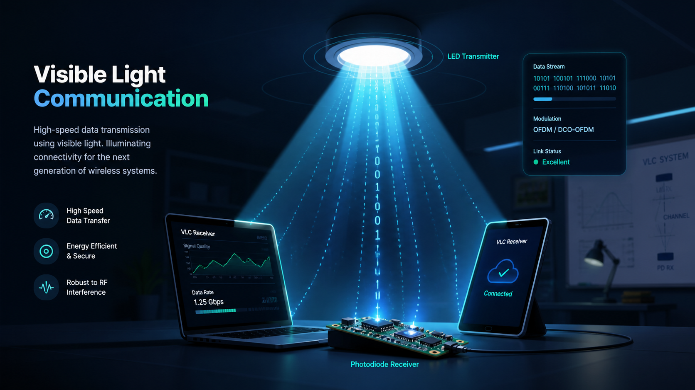
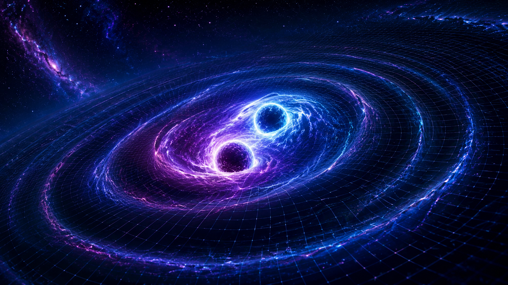
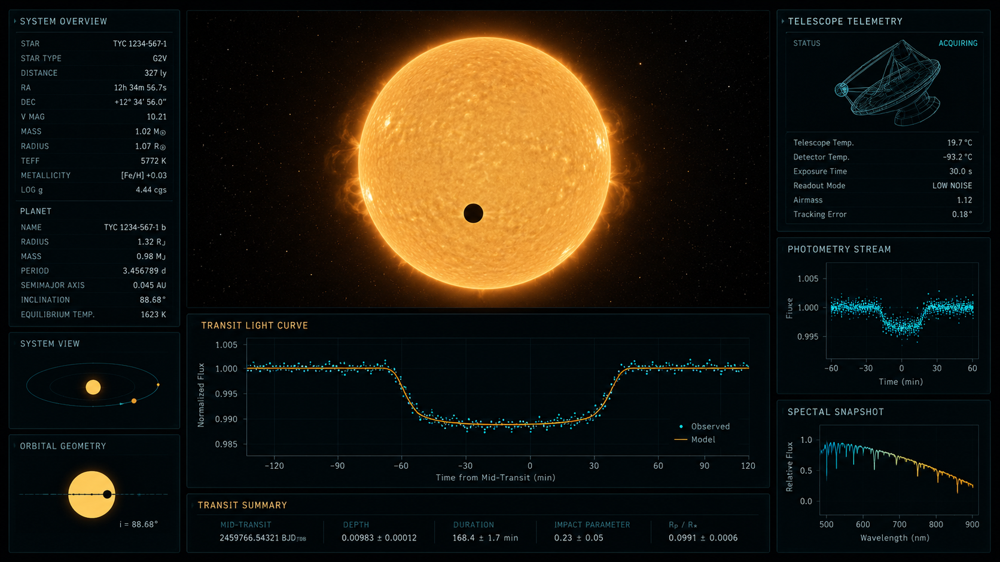
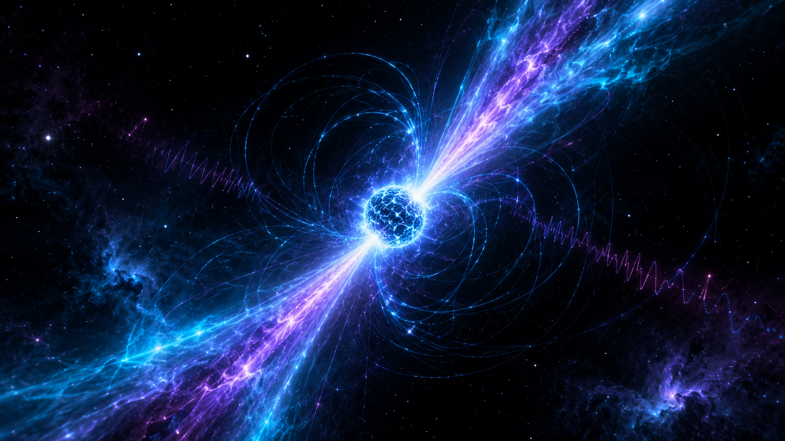
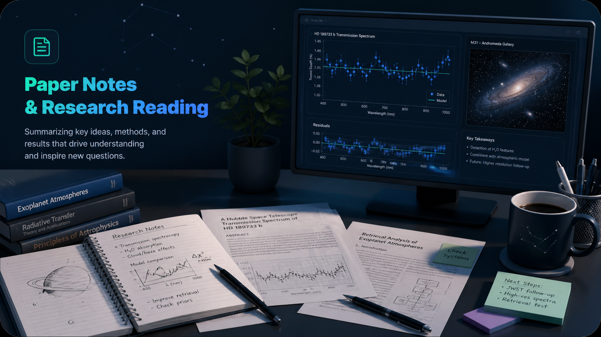

MSc research contribution
Supervised spectrograph feedback-control work involving instrumentation, sensing, experimental logging, and control-system analysis.
Precision instrumentation · Closed-loop feedback systems · Scientific computing
I work at the boundary between astrophysics, electronics engineering, and experimental measurement. My portfolio brings together supervised instrumentation research, browser-based scientific tools, observational analysis, and technical writing for astronomy and physics.

At a glance
A concise view of my research profile, outputs, and current direction.
Supervised spectrograph feedback-control work involving instrumentation, sensing, experimental logging, and control-system analysis.
Engineering and instrumentation-related publications, including visible-light communication and embedded-system work.
Browser-based astronomy tools, numerical simulations, and interactive data-visualisation platforms.
Paper notes, systematic explainers, visual science posts, and research logging.
Open to PhD and research opportunities in astronomical instrumentation, exoplanets, and scientific computing.
About
I sit where the hardware ends and the data begins — and I like problems that need both halves to be right.
I hold an MSc in Astrophysics with Advanced Research from the University of Hertfordshire and a BTech in Electronics and Communication Engineering. The electronics background gives me practical grounding in hardware, sensors, embedded systems, signal handling, and experimental setups; the astrophysics background gives me training in measurement problems, data analysis, physical interpretation, and astronomical systems.
My interest is in building bridges between instruments, data acquisition, control systems, and scientific interpretation. Alongside research, I develop unified astronomical dashboards and interactive open-science tools to make scientific workflows more visual and inspectable.
Capabilities
A capability map drawn from my MSc research, placements, and engineering background — grouped as on my CV.
Selected research highlights
Specific, academically honest summaries — each links out to repositories, theses, talks, or publications for inspection.

MSc research · Supervised
As part of my MSc research at the University of Hertfordshire, I contributed to supervised work on closed-loop feedback control for the EXOhSPEC high-resolution spectrograph project, with emphasis on instrumentation, sensing, experimental logging, and control-system analysis.
Supervised by Prof. Hugh Jones and Prof. Bill Martin.

Survey data · Team project
Investigated candidate halo T dwarfs and substellar populations using VISTA, DES and WISE survey data. Supervised by Prof. David Pinfield; presented as a joint project talk.

SEPnet placement · Lumi Space
Studied detector performance for satellite laser ranging, including microbolometer feasibility, atmospheric transmission and link-budget analysis.

BTech project · Published
A dimming-controlled visible light communication system on Raspberry Pi with optical and electronic hardware — undergraduate engineering work, published in Optical and Quantum Electronics.
Proof trail
Where to inspect the evidence directly.
Open science tools
Browser-based, client-side astronomy tools — interactive simulation and visualisation that run in the browser with nothing to install. Each opens in its own page.

A browser-based visualisation of accretion disks around a black hole, built to explain relativistic effects interactively — runs client-side with nothing to install.
More interactive tools
A live snapshot of technical output. If GitHub rate-limits the request, this falls back to a direct link.
Connecting to the GitHub public API.
Writing & science communication
Paper notes, a research blog, and visual explainers — written to be read by curious scientists, not skimmed.
Structured, active reading notes on radial-velocity instrumentation, brown dwarfs, optics and exoplanet science.
Technical science writing on instrumentation, exoplanets, spectra, cosmology and the work of measurement.
Conceptual astronomy visuals and science explainers for outreach and communication.

When spacetime itself starts ringing.

How tiny dips in starlight reveal planets.

The cosmic lighthouses of the deep.
What happens when gravity wins.

Explainers, paper notes and writing.
Conceptual visuals are used for communication and outreach; they are not presented as observational data or experimental results.
Optional
Optional astronomy curiosities — approximate, educational, and separate from the academic sections above.